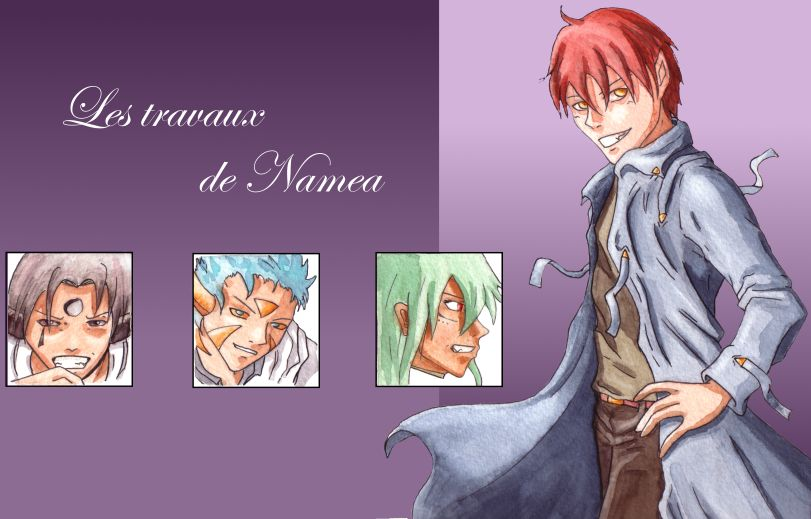
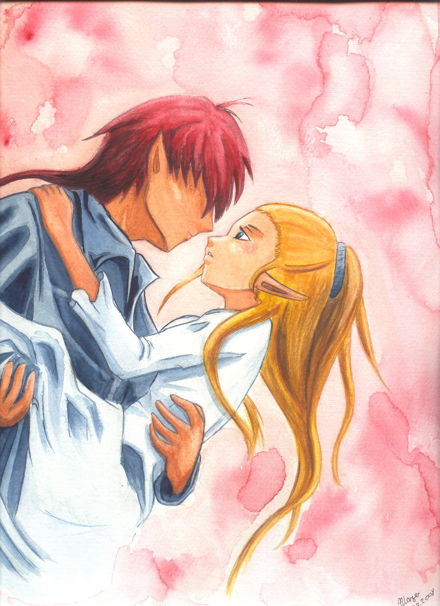
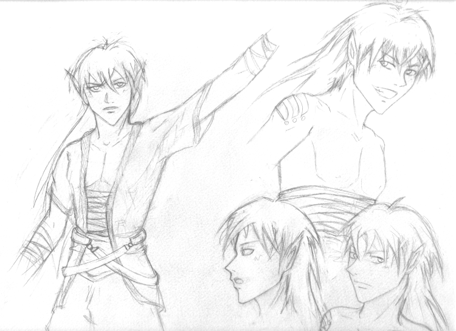
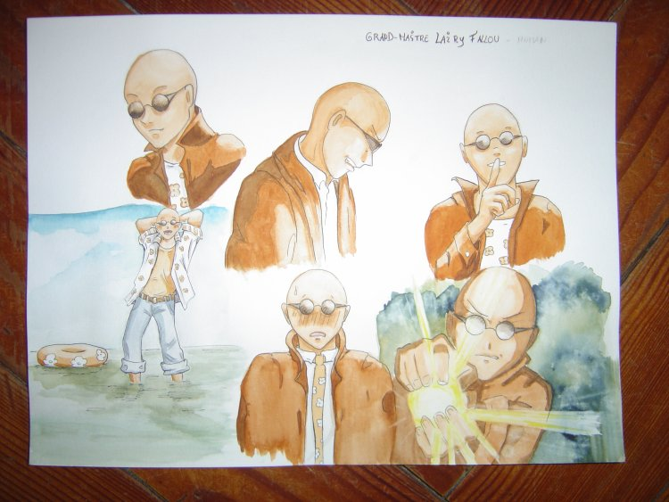
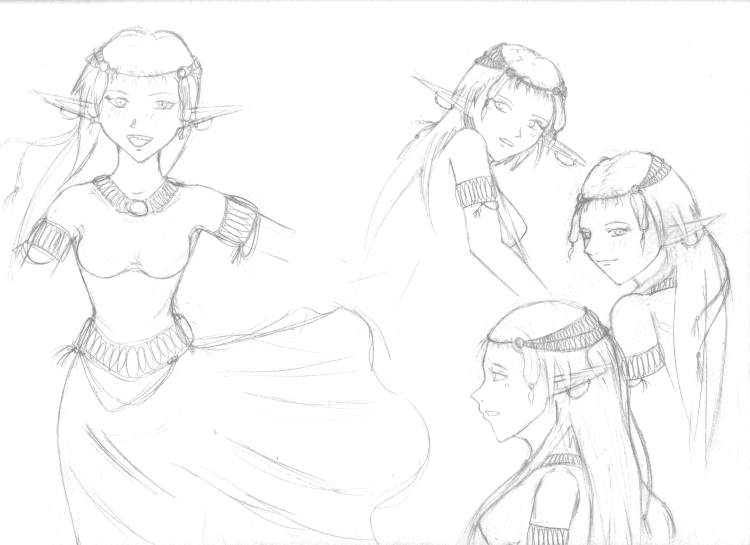
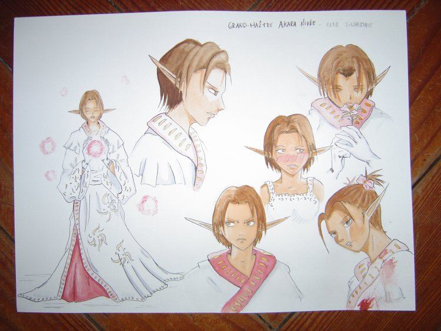
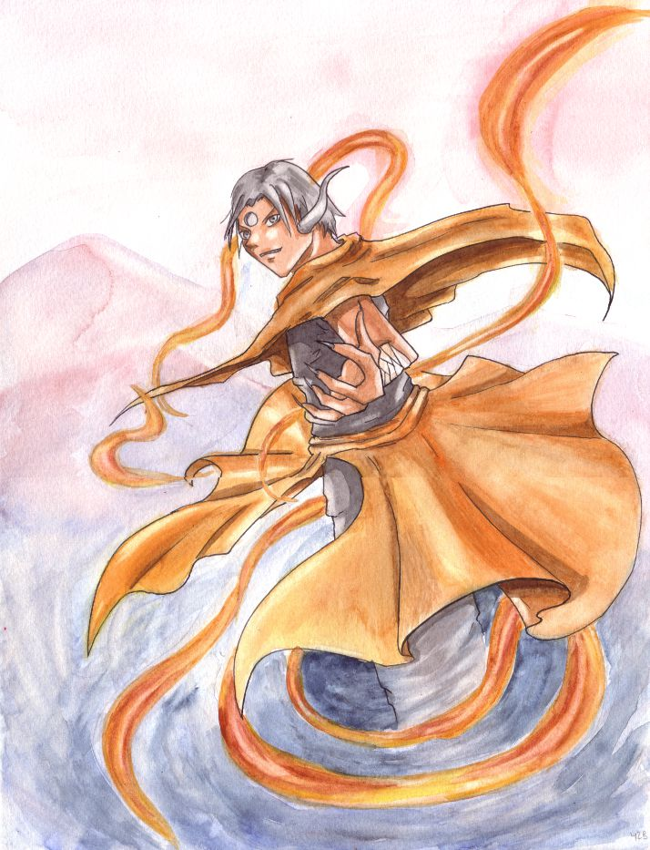
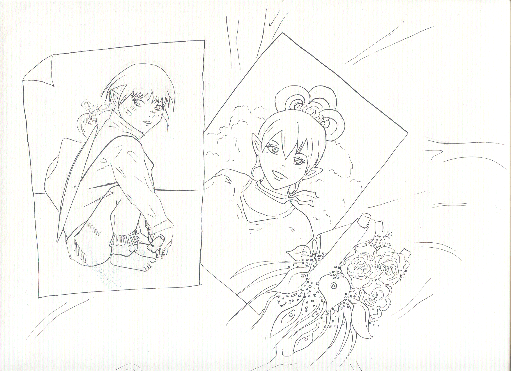
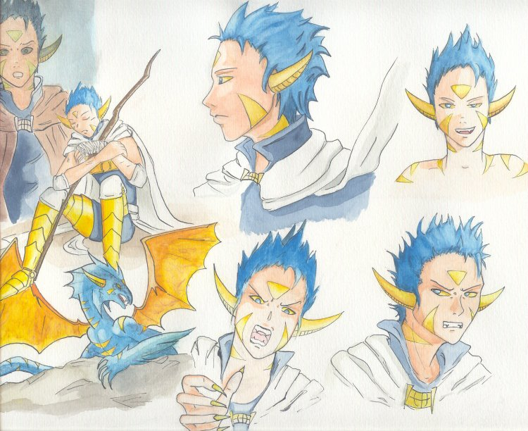

Illustrations du tome 1
Cliquez sur une vignette pour l’agrandir. Certaines images sont des essais de couverture ou de scènes clés, d’autres des recherches de personnages ou de planches.





















